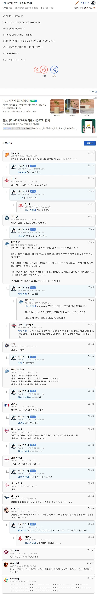
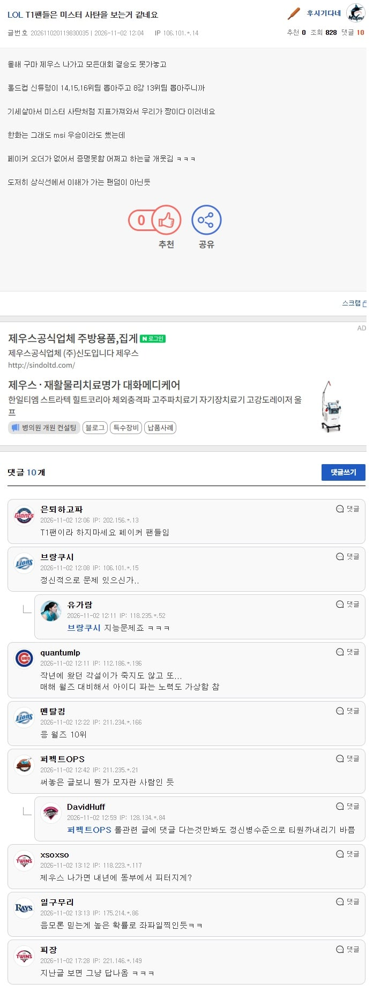
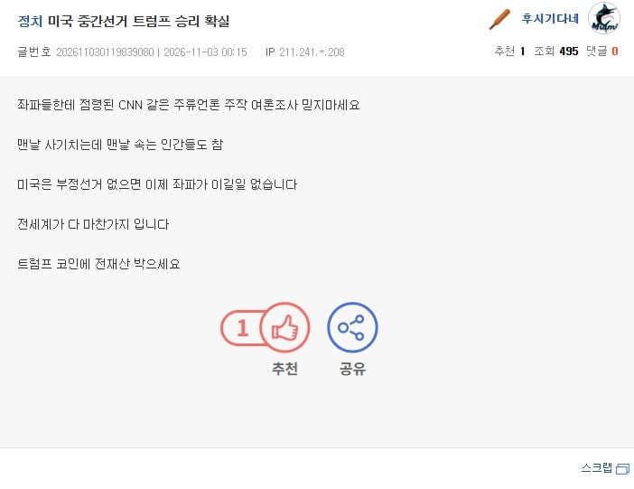

https://www.dogdrip.net/732789105
이 글 보고 진짜 인가 소설인가 논란이 있었는데



그만 알아보자
https://www.dogdrip.net/732789105
이 글 보고 진짜 인가 소설인가 논란이 있었는데



그만 알아보자
정신이 아픈사람이네
티원~

롤창인생중 한명이었구만

저런 정신병자들은 상대해봐야 피곤하기만 함
명백한 모순을 이야기해봐야 이해를 하지도 하려하지도 않더라
첫번째글이 진심으로 쓴거일수도 있는거네
티~원